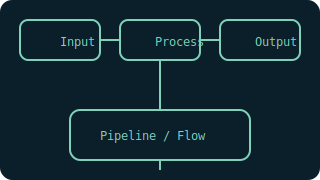

JavaScript 上手指南
覆盖基础语法、浏览器与 Node.js 环境、常见概念与问题。按练习推进，尽快做到“能跑能用”。

安装与环境
- Node.js：推荐 LTS，使用
nvm-windows管理版本。 - 包管理：
npm/pnpm/yarn，推荐pnpm。 - 浏览器：使用 DevTools 的 Console 与 Network 面板调试。
完整新手路径：第一步怎么做
- 安装 Node.js（LTS），推荐
nvm-windows管理版本。 - VS Code 安装官方 JS/TS 扩展，熟悉终端与调试面板。
- 新建文件夹
learn-js，新建hello.js：console.log('Hello')。 - 在终端运行：
node hello.js；改为console.log(1+2)再运行。 - 用浏览器 Console 试验：按 F12 打开 DevTools，输入 JS 表达式。
基础语法
// 变量与常量
let a = 1; const b = 2;
// 模板字符串
const s = `sum=${a+b}`;
// 解构与展开
const obj = {x:1,y:2}; const {x} = obj; const obj2 = {...obj, z:3};
// 可选链与空值合并
const city = user?.profile?.city ?? "unknown";
// 异步与 Promise
async function fetchJSON(url){
const res = await fetch(url);
if(!res.ok) throw new Error(res.statusText);
return res.json();
}
如何运行与调试
- Node.js：
node your_script.js；部分工具支持--watch自动重载。 - 浏览器：使用 Console、Network、Sources 面板断点调试。
- 模块化：在 Node 中用
import/export需设置"type":"module"或使用require。
常见坑
- 隐式类型转换：尽量用全等
===，避免松散比较引发问题。 - 异步错误：在
async中使用try/catch或.catch()。 - 作用域与循环：
for(let i...)；避免var带来的函数作用域陷阱。
项目入门
- 命令行工具：读取一个文本文件，统计词频并输出前 20。
- 网页抓取：请求一个新闻站点，提取标题列表并保存为 CSV。
- 小型前端页面：待办事项，支持新增/完成/删除，数据保存到
localStorage。
配图

扩展内容
- 工具链：ESLint/Prettier/Vitest 与 CI 集成。
- 性能：避免长任务；使用 Web Workers 与懒加载。
- 工程化：Monorepo（npm workspace）与发布流程。
练习题
- 编写一个请求重试函数，支持次数与退避策略。
- 实现一个简单的事件总线
on/emit/off。 - 写一个并发控制器，限制同时进行的任务数量。
国内网络建议
- 使用国内镜像源（如
npmmirror.com）：npm config set registry https://registry.npmmirror.com/ - 遇到网络受限，优先使用本地“国内模式”和代理下载（本站提供）。
- 图片/脚本加载失败时，打开 DevTools 查看具体错误与失败 URL。
参考资源
- MDN JavaScript 指南（语法与运行时）
- Node.js 官方文档（API 与实践）
- TC39 提案（理解新语法演进）
系统化学习路径
- 语言能力：JS 基础、ES6+、异步与模块、TypeScript（可选）。
- 浏览器开发：DOM/事件、存储、网络、性能与可访问性。
- 工程与全栈：打包构建、测试、CI/CD、Node.js 服务与数据库。
进阶项目
- 可测试、可观察的前端组件框架（路由、状态、覆盖率）。
- Serverless 全栈板：前端 + API 网关 + 云函数 + 存储。
- 实时协作应用：WebSocket/RTC、CRDT/OT，同步与冲突解决。
理论与论文到代码索引（JavaScript）
- MapReduce（概念）；前端可用于数据处理与可视化演示。